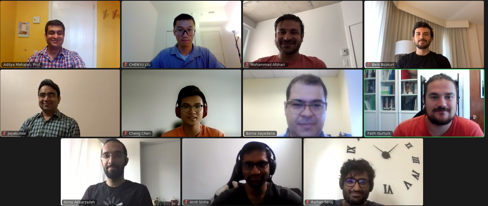
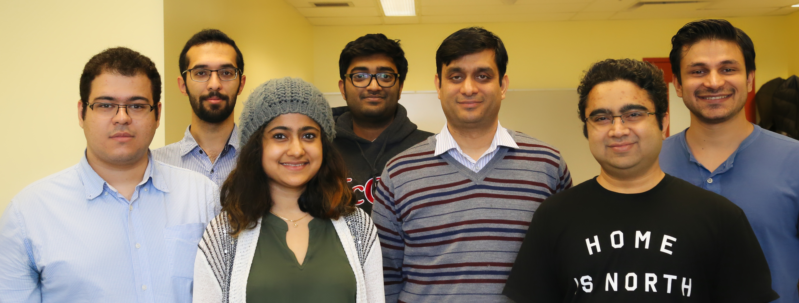

Current PhD Students
- Tao Zhang (supervisor: Prof. Peter Caines)
- Samin Nili-Ahmadabadi
- Amit Sinha
- Borna Sayedana (co-supervisor: Prof. Peter Caines)
- Raihan Seraj (co-supervisor: Prof. Jerome Le Ny)
Current Master’s Students
- Edwin Meriaux
- Reihaneh Ghoroghchian (supervisor: Peter Caines)

Group photo (2021). Top Row (L to R): Aditya, Chenyu, Mohammad, Berk. Middle Row: Jayakumar, Cheng, Borna, Fatih. Bottom Row: Nima, Amit, Raihan.

Group photo (2017). From L to R: Borna, Nima, Jhelum, Raihan, Aditya, Jayakumar, Mohammad.
Graduated PhD Students
- Nima Akbarzadeh, Aug 2022. Restless multi-armed bandits: Indexability, Whittle Index Computation, and Learning.
- Mohammad Afshari, March 2021. Team optimal decentralized estimation and control of networked linear quadratic systems.
- Jayakumar Subramanian, April 2020. Reinforcement learning in partially observed and multi-agent systems.
- Jhelum Chakravorty, Aug 2017. Fundamental limits of remote estimation.
- Jalal Arabneydi, Dec 2016. New Concepts in Team Theory: Mean Field Teams and Reinforcement Learning.
- Chuangshen Dong (supervisor: Prof. Haibo Zeng), Apr 2016. Greener Cyber Physical Systems—Data Analysis and Algorithm Design.
Graduated Master’s Students
- Annavaleria Ardito (supervisor: Prof. Luca de Cicco), March 2024. Study and implementation of multiple mobile robots control.
- Berk Bozkurt, Apr 2024. Weighted-norm bounds on model approximation in MDPs with unbounded per-step cost.
- Erfan SeyedSalehi, Apr 2023. Approximate information state for model based recurrent Q-learning.
- Sharareh Younesian (co-supervisor: Prof. Peter Caines), Dec 2022. Structure-aware reinforcement learning for searching optimal monotone policies.
- Chenyu Liu, June 2022. Optimism in \(Q\)-learning: Unified overview and comparison.
- Alper Öker (co-supervisor: Prof. Peter Caines), April 2021. Distributed Kalman Filtering and Estimation.
- Anirudha Jitani (co-supervisor: Prof. Doina Precup), April 2021. Intelligent node-overload protection in mobile edge computing using reinforcement learning.
- Amit Sinha, Dec 2020. Reinforcement learning in POMDPs.
- Samin Yeasar Arnob, May 2020. Improving Robustness in Inverse Reinforcement Learning.
- Borna Sayedana, Aug 2019. Monotonicity of value function and optimal policy in cross-layer design of communication systems.
- Raihan Seraj, April 2019. Learning in the presence of partial observability and concept drifts.
- Romina Hassani (supervisor: Prof. Peter Caines), Dec 2018. Social learning and distributed hypothesis testing.
- Sebin Mathew, Aug 2018. Dual decomposition algorithms for sensor scheduling.
- Ming Lei (supervisor: Prof. François Bouffard), Aug 2017. Optimal policies for energy storage in microgrids.
- Aide Zhou, Apr 2017. Monte Carlo simulations for remote state estimation.
- Calvin Ma (supervisor: Prof. Brett Meyer), Aug 2016. Multi-armed bandits for MPSoC design space exploration.
- Can Cui, Aug 2015. On computing optimal thresholds for sequential hypothesis testing.
- Mehnaz Mannan, Apr 2015. Finite-state approximation for a class of POMDPs and comparison of reinforcement learning algorithms for managing energy storage in renewable generation.
- Prokopis Prokopiou (supervisor: Prof. Peter Caines), Aug 2014. An estimation based allocation rule with super-linear regret and finite lock-on time for dependent multi-armed bandits.